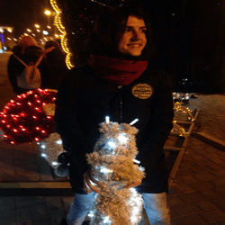
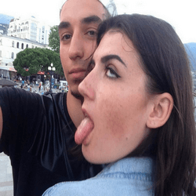

"Её улыбка, мама - кругом голова" Сразу хочу отметить: самое лучшее, что ты можешь сделать для меня - это никогда не переставать улыбаться.У тебя очень красивая улыбка, особенно в сочетании с щечками, и она очень тебе подходит. Просто улыбайся,я буду стараться, чтобы это происходило, как можно чаще. Ведь, Машка без улыбки, не Машка. Надеюсь, тебе понравится твоё 18-летие и ты запомнишь его на всю жизнь.Тут я хочу поговоирть о нашей схожести, знаешь, ты ведь немного того, и, по сути,я ничем не отичаюсь от тебя, даже может, превосхожу тебя в этом деле, но это не то чем стоило бы хвастаться.В этом есть свои плюсы, главный из них - это то, что нам не скучно друг с другом. Как по мне, ваимные подколы,основанные на схоже чувстве юмора, и составляют крепкую связь между нами. Так что, говнулька моя, не обижайся попросту, будь весёлой и энергичной.Ведь впереди нас ждут новые великие свершения.Дудочка моя, иногда ты бываешь очень даже глупенькой. Надеюсь, что ты это специально делаешь, типа на дурочку падаешь.Как говорится, быть умной - это вовремя притвориться глупой. Ну, а если к делу, то хочу пожелать тебе, чтобы ты закончила универ,чтобы устроилась на хорошую работу, а это та работа, которая тебе нравится, а не та, где большая зарплата и, главное, следовала путю самосовершенствования.Я буду тебя в этом поддерживать и стараться давать дельные советы.Тут я бы хотел поговорить о твоей ревности. Думаю твое лицо на фотке становится всегда таким, когда ты видишь какую-то бабусмотрящую на меня, или просто в мою сторону, в данной ситуации это не имеет значение. Но хочу сказать тебе, нужно научиться доверятьмне, чтобы не возникало каки-либо подозрений и тд. Я тебе говорил,говорю и буду говорить, забудь о других бабах и перестань ревновать ко всем, если ты находишься рядом со мной, а не они. Я верю, что ты когда-нибудьпоймёшь это и у нас больше не будет никаких ситуаций связанных с этой темой. Ведь нельзя запретить человеку общаться с противоположным полом, если конечно это не переходит рамкидозволенного.Знаешь, говорят, мол девушка ведёт себя так, как относится к ней её парень,но разве вообще возможно достичь такого уровня отношения от парня, чтобы быть такой неадекватной ???! Та ладно, я шучу, ты очень даже адекватная, просто любишь побеситься и побесить и, знаешь что,это очень даже хорошо, ведь если бы отношения всегда двигались прямолинейно, то им бы чего-то не хватало бы,они бы стали скучными,но и перебарщивать с этим не стоит. Так что я хочу пожелать тебе всегда оставаться такой же, какая ты сейчас весёлая, счастливая и красивая.